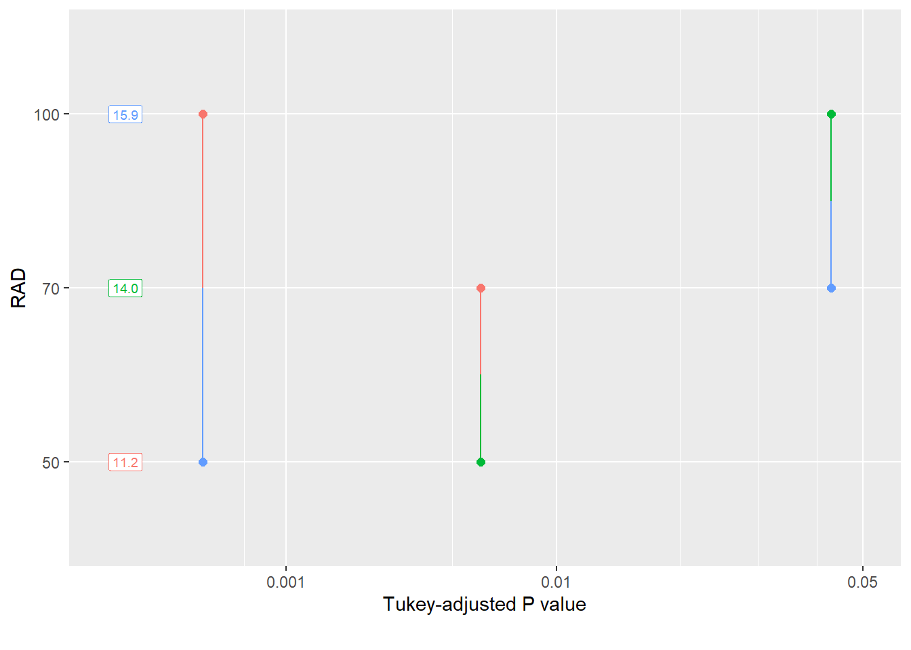
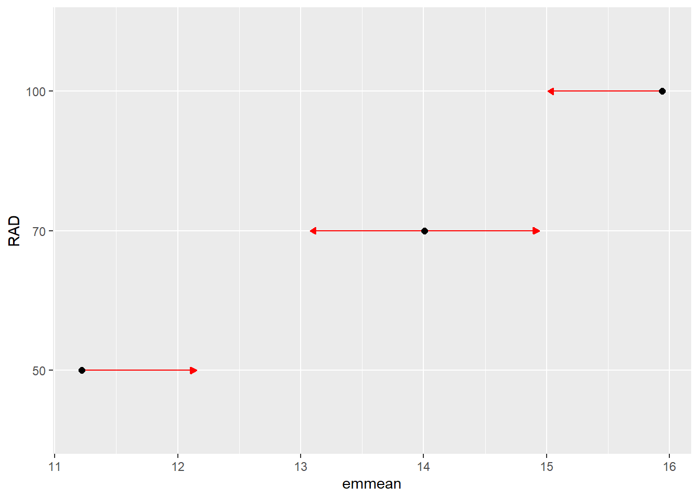
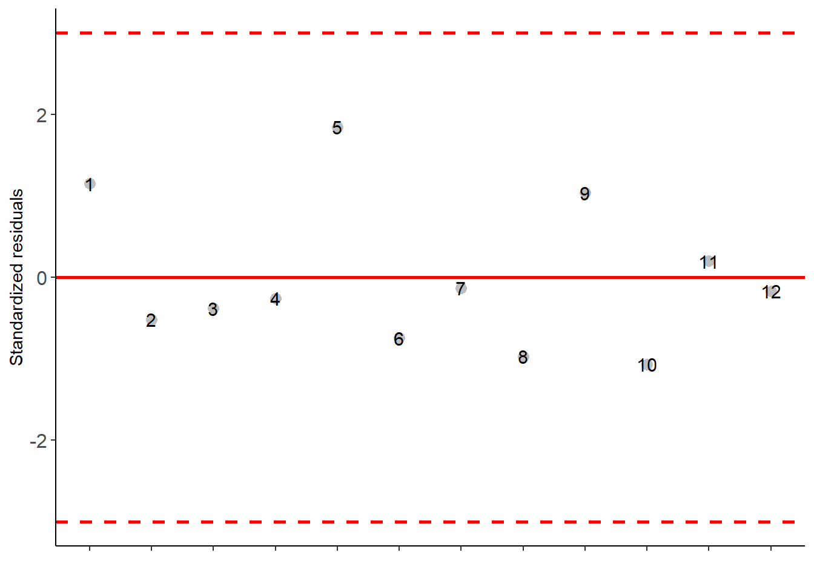
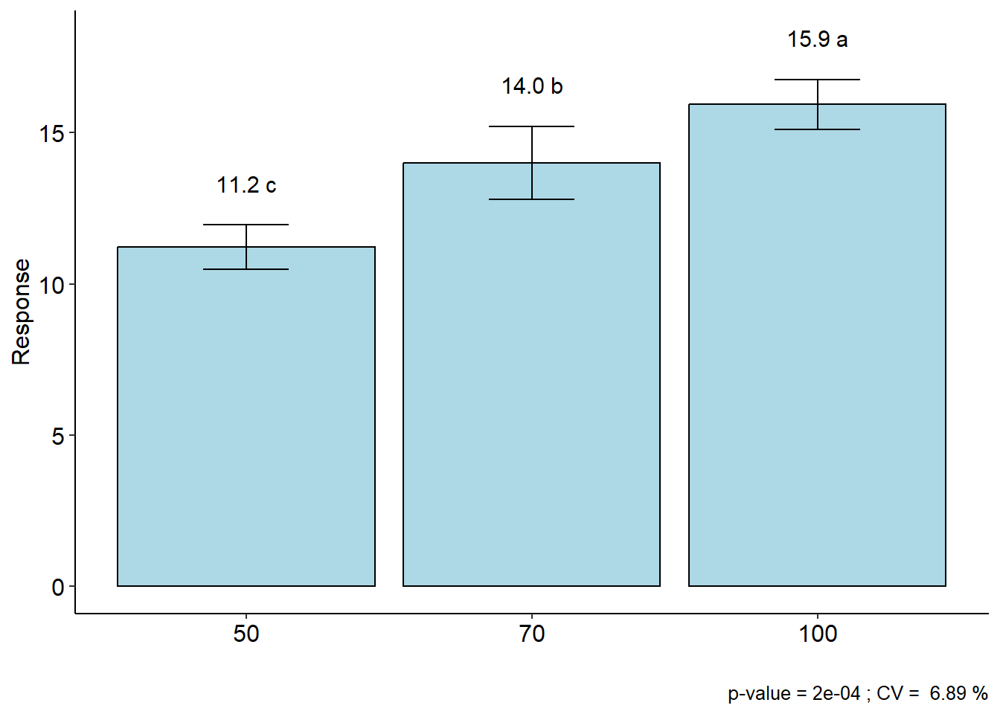

7. Delineamento Inteiramente Casualizado
1 Pacotes
2 Delineamento Inteiramente Casualizado (DIC)
O Delineamento inteiramente casualizado (DIC) é considerado o delineamento mais simples na experimentação agrícola. Neste delineamento, as unidades experimentais são destinadas a cada tratamento de uma forma inteiramente casual (sorteio). Este delineamento apresenta as seguintes características:
2.1 Características
- Utiliza apenas os princípios de repetição e casualização;
- Os tratamentos são alocados nas parcelas de forma inteiramente casual, sem nenhum tipo de bloqueamento.
- Exige que o material experimental e a área experimental sejam uniformes. Ele geralmente é mais utilizado em experimentos nos quais as condições experimentais podem ser bastante controladas (por exemplo em laboratórios);
2.2 Vantagens
Delineamento flexível, onde o número de tratamentos e repetições depende apenas da quantidade de parcelas disponíveis na área experimental.
O número de repetições pode diferir de um tratamento para o outro (experimento não balanceado)
A análise estatística é simples
O número de graus de liberdade do erro é o maior possível considerando o número de repetições utilizado.
2.3 Desvantagens
- Exige homogeneidade das condições ambientais
- Pode estimar uma variância residual muito alta caso a área experimental apresente heterogeneidade, inflacionando o quadrado médio do erro.
3 Conjunto de dados
O conjunto de dados utilizado neste exemplo é oriundo de um experimento que avaliou caracteres qualitativos e quantitativos de chicória sob diferentes níveis de sombreamento
OLIVOTO, T.; ELLI, E. F.; SCHMIDT, D.; CARON, B. O.; DE SOUZA, V. Q. Photosynthetic photon flux density levels affect morphology and bromatology in Cichorium endivia L. var. latifolia grown in a hydroponic system. Scientia Horticulturae, v. 230, p. 178–185, 2018. Disponível em: https://doi.org/10.1016/j.scienta.2017.11.031
Para fins didáticos, a área foliar (AF, cm\(^2\)) e a matéria seca por planta (MST, g planta\(^{-1}\)) mensuradas aos 35 dias após a implantação são apresentadas aqui.
Para importação, utiliza-se a função import() do pacote rio. A função as_factor converte as primeiras duas colunas para fator.
4 Verificação de outliers
A função inspect do pacote metan é utilizada para inspecionar o conjunto de dados. Com esta função, é possível identificar possíveis outliers, bem como valores faltantes.
inspect(df_dic, plot = TRUE)
## # A tibble: 5 × 10
## Variable Class Missing Levels Valid_n Min Median Max Outlier Text
## <chr> <chr> <chr> <chr> <int> <dbl> <dbl> <dbl> <dbl> <lgl>
## 1 RAD factor No 3 12 NA NA NA NA NA
## 2 REP factor No 4 12 NA NA NA NA NA
## 3 AF_M2 numeric No - 12 3.65 5.28 6.12 0 NA
## 4 AF numeric No - 12 3648. 5287. 6118. 0 NA
## 5 MST numeric No - 12 10.7 13.6 16.9 0 NA
5 Estatística descritiva
A função desc_stat() do pacote metan computa estatísticas descritivas para os dois caracteres numéricos (AF e MST).
desc_stat(df_dic)
## # A tibble: 3 × 10
## variable cv max mean median min sd.amo se ci.t n.valid
## <chr> <dbl> <dbl> <dbl> <dbl> <dbl> <dbl> <dbl> <dbl> <dbl>
## 1 AF 14.7 6118. 5144. 5287. 3648. 755. 218. 479. 12
## 2 AF_M2 14.6 6.12 5.14 5.28 3.65 0.753 0.217 0.478 12
## 3 MST 16.0 16.9 13.7 13.6 10.7 2.20 0.634 1.40 126 Análise de variância
6.1 Modelo estatístico
O delineamento inteiramente casualizado (DIC) é um delineamento adequado para áreas uniformes (parcelas são uniformes), onde não há necessidade de controle local (bloqueamento). Neste delineamento, os tratamentos devem ser distribuídos aleatoriamente nas parcelas.
O modelo do DIC é dado por
\[ {Y_{ij}} = m + {t_i} + {\varepsilon _{ij}} \]
Onde m é a média geral do experimento, \(t_i\) é o efeito de tratamentos, sendo estimado por \(\hat t_i = \bar Y_{i.} - \bar Y_{..}\) com a seguinte restrição: \(\sum_i \hat t_i = 0 ~~~~\forall_i\) (leia-se, o somatório dos efeitos de tratamento é zero para todo tratamento \(i\)). \(\epsilon_{ij}\) é o erro experimental estimado por \(\hat e_{ij} = Y_{ij} - m - \hat t_i\) onde \({e_{ij}}\sim NID(0,{\sigma ^2})\).
6.2 Análise de variância
A análise de variância é computada no software R utilizando a função aov(). Considerando o Delineamento Inteiramente Casualizado (DIC), a única fonte de variação incluída no modelo é tratamento, neste caso, RAD.
6.3 Comparação de médias
Em sequência a ANOVA, quando o efeito de tratamento é significativo, teste de Tukey (5% de erro) pode ser utilizado para comparação das médias. Este teste realiza todas as combinações possíveis entre as médias (por isso o nome comparação múltipla de medias), comparando se a diferença entre duas médias é maior ou menor que uma diferença mínima significativa (DMS). Esta DMS é calculada pela seguinte fórmula \(DMS = q \times \sqrt{QME/r}\), onde q é um valor tabelado, considerando o número de tratamentos e o GL do erro; QME é o quadrado médio do erro; e r é o número de repetições (ou blocos).
A fórmula da DMS descrita acima é utilizada apenas se (e somente se) o número de repetições de todos os tratamentos é igual. Caso algum tratamento apresente um número inferir de repetições, fato comumente observado em experimentos de campo devido a presença de parcelas perdidas, a DMS deste par de médias em específico deve ser corrigida. Geralmente, as análises complementares são realizadas quando a ANOVA indica significância para um determinado fator de variação, no entanto, o teste Tukey pode revelar diferença entre as médias, mesmo quando o teste F não indicar essa diferença. Isto pode ser observado, principalmente quando a probabilidade de erro for muito próxima de 5%, por exemplo, Pr>Fc = 0.0502. A recíproca também é verdadeira. O teste Tukey pode indicar que as médias não diferem, se Pr>Fc = 0.0492, por exemplo.
O valor de q pode ser encontrado na seguinte tabela:
Para este caso, considerando 3 e 9 como o número de tratamentos e o GL do erro, respectivamente, o valor de q é 3,95, que aplicado na fórmula resulta em \(DMS = 3,95 \times \sqrt{0,893/4}=1,866\). Logo, a diferença mínima entre duas médias para que estas sejam significativamente diferentes (5% de erro), deve ser de 1,866.
Podemos realizar a comparação par-a-par utilizando a função pwpm() do pacote emmeans.
50 70 100
50 [11.2] 0.0061 0.0002
70 -2.79 [14.0] 0.0428
100 -4.72 -1.93 [15.9]
Row and column labels: RAD
Upper triangle: P values adjust = "tukey"
Diagonal: [Estimates] (emmean)
Lower triangle: Comparisons (estimate) earlier vs. laterUma alternativa é o Pairwise P-value plot exibindo todos os P-values em comparações de pares. Cada comparação está associada a um segmento de linha vertical que une as posições de escala das duas médias que estão sendo comparadas e cuja posição horizontal é determinada pelo P-valor dessa comparação. Esta técnica não é indicada quando muitas comparações estão sendo testadas.
pwpp(medias)
Outra maneira de representar comparações graficamente por meio do argumento de comparações em plot.emm(). Nesta abordagem, a avaliação da significância das médias de dois tratamentos é dada pela sobreposição das flechas de cada tratamento. Se dois tratamentos apresentam setas que se sobrepoem (considerando o eixo x), assume-se que estes tratamentos são estatisticamente diferentes um do outro.
plot(medias,
CIs = FALSE, # remove os intervalos de confiança das médias
comparisons = TRUE) # insere setas para comparação de médias (Tukey)
7 Pacote AgroR
Uma outra alternativa para realizar a análise de variância no software R é o pacote agroR. Neste exemplo, a ANOVA e a comparação de médias são realizadas com a função DIC.

##
## -----------------------------------------------------------------
## Normality of errors
## -----------------------------------------------------------------
## Method Statistic p.value
## Shapiro-Wilk normality test(W) 0.9069014 0.1946704
##
##
## -----------------------------------------------------------------
## Homogeneity of Variances
## -----------------------------------------------------------------
## Method Statistic p.value
## Bartlett test(Bartlett's K-squared) 0.7549789 0.6855804
##
##
## -----------------------------------------------------------------
## Independence from errors
## -----------------------------------------------------------------
## Method Statistic p.value
## Durbin-Watson test(DW) 2.801292 0.8236229
##
##
## -----------------------------------------------------------------
## Additional Information
## -----------------------------------------------------------------
##
## CV (%) = 6.89
## MStrat/MST = 0.96
## Mean = 13.7232
## Median = 13.5946
## Possible outliers = No discrepant point
##
## -----------------------------------------------------------------
## Analysis of Variance
## -----------------------------------------------------------------
## Df Sum Sq Mean.Sq F value Pr(F)
## trat 2 45.05797 22.5289828 25.21678 0.0002046201
## Residuals 9 8.04071 0.8934123
##
##
##
##
## -----------------------------------------------------------------
## Multiple Comparison Test
## -----------------------------------------------------------------
## resp groups
## 100 15.94093 a
## 70 14.00834 b
## 50 11.22022 c